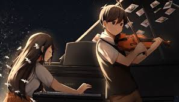
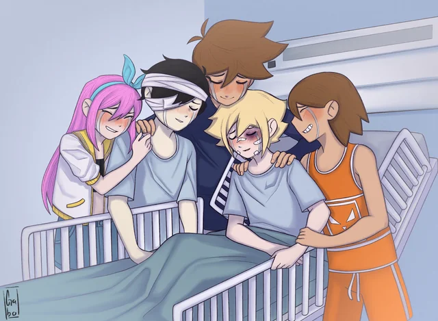
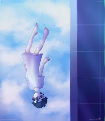
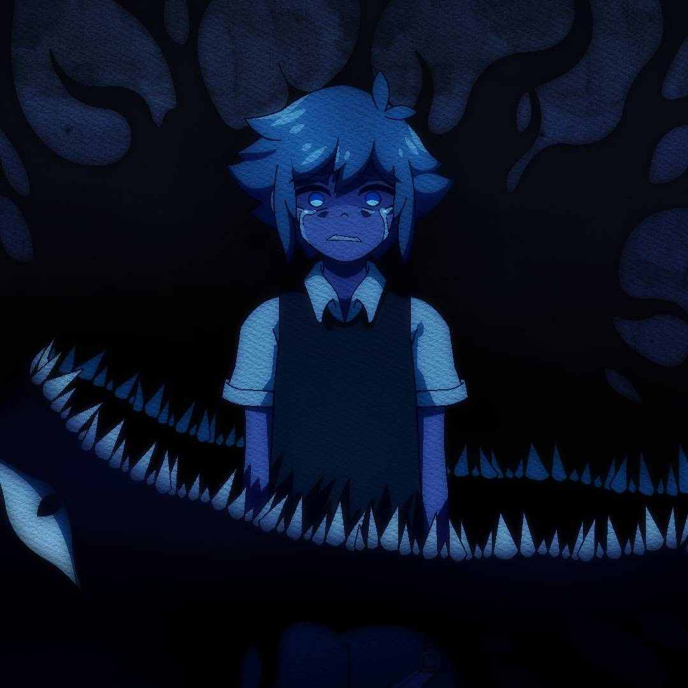

Final Verdadero
Tras un largo viaje, Sunny finalmente se enfrenta a sus miedos y a Omori en una batalla tragica. Con sus amigos Sunny es capaz de hacer frente a Omori, pero no es suficiente, entonces, decide recordar a Mari y en un ultimo acto, tocan Final Duet para asi avanzar finalmente.
Al despertar, Sunny empieza a llorar por Mari y decide contar finalmente lo ocurrido hace 4 años a sus amigos logrando perdonar a Basil y perdonarse a el mismo. Para asi abandonar Faraway Town y comenzar una nueva vida
Final Oyasumi
Sunny intento todo para superar sus miedos, superar a something, superar a la muerte de Mari, pero no lo logro, Omori tomo el control de su cuerpo y decide que Sunny debe permanecer en el headspace para siempre. Despues de todo, Omori solo queria proteger a Sunny de la realidad dolorosa, asi que lo mantiene en un sueño eterno donde nunca tendra que enfrentar el dolor de la perdida.
Final HeadSpace
Sunny nunca decide enfrentar sus miedos y nunca sale de su casa convirtiendose en un hikikomori durante el resto del juego y vivir sus aventuras en el HeadSpace. Finalmente llega el dia de la mudanza y something le sigue coomo una sombra por el resto de su vida
Ŧเภคɭ ๒ครเɭ
รยภภץ รยקєг๏ Շ๏๔๏ร รยร ๓เє๔๏ร קคгค ợยє คɭ Ŧเภคɭ ๔єɭ ๔íค, ภ๏ קยє๔ค รคɭשคг ค รย ค๓เﻮ๏. ๔єรקยéร ๔є ɭค קเןค๓ค๔ค єภ ςครค ๔є кєɭ ץ ђєг๏, รยภภץ รє ๔єรקเєгՇค ץ ค ๔เŦєгєภςเค ๔єɭ Ŧเภคɭ שєг๔ค๔єг๏, Շє שยєɭשєร ค ๔๏г๓เг קг๏ש๏ςคภ๔๏ ợยє ๒ครเɭ รє รยเςเ๔є. єรՇคгคร ς๏ภՇєภՇ๏